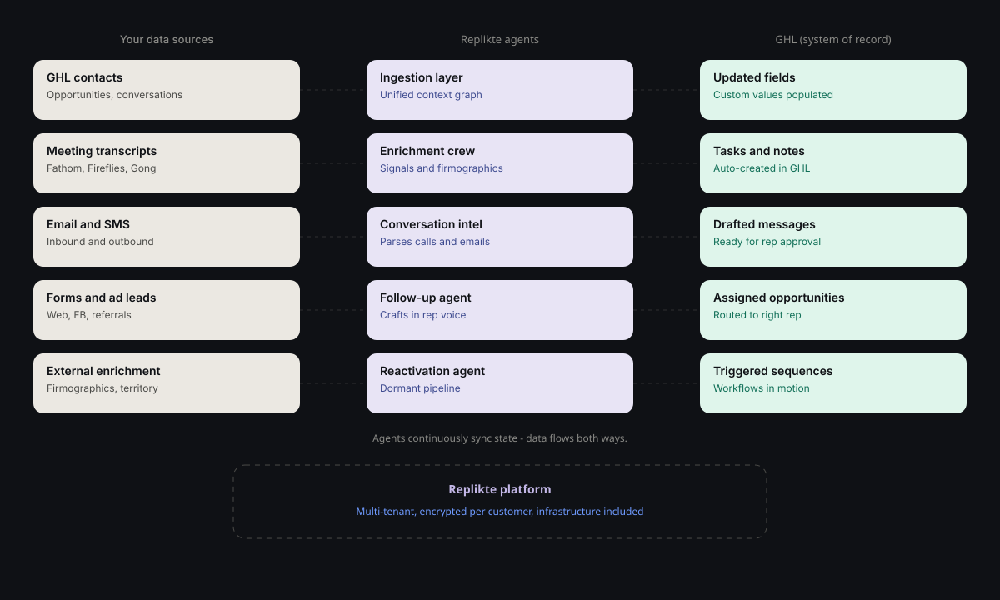
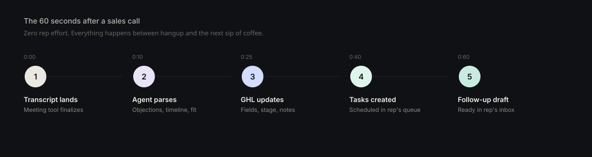

01
Ingest & unify
Every contact, opportunity, conversation, and custom value across your GHL sub-accounts — pulled into a single agent-readable layer, kept in sync continuously.
Go High Level · Agentic Operations
We extend Go High Level with purpose-built agents that ingest your data, enrich every contact, and act on opportunities 24/7 — drafting follow-ups, populating fields from calls, and reactivating dormant pipeline. Your CRM stops being a place reps log work. It becomes the work.
Custom Fields
Tasks — created automatically
Hi Jordan,
Thanks for walking me through the setup at the new property.
Attaching the well-water spec sheet — the bypass install is simpler than what you saw with Culligan, which addresses the complexity concern you raised.
I'll circle back Thursday after your call with your spouse.
— Morgan
You bought Go High Level because it consolidates your stack. Pipelines, contacts, conversations, workflows — all in one place. But the system only works if the data inside it is clean, current, and complete. And in most teams, it isn't.
The problem isn't GHL. The problem is that every CRM was built on the assumption that a human would faithfully feed it. Agents change that assumption.
We've built a multi-tenant agentic platform that connects directly to Go High Level and the rest of your stack — meeting tools, email, forms, phone, every digital asset that touches a customer. Agents read from all of it, enrich your records, and write back into GHL so your team works in one system.
Six capabilities, all native to GHL.
01
Every contact, opportunity, conversation, and custom value across your GHL sub-accounts — pulled into a single agent-readable layer, kept in sync continuously.
02
Firmographics for commercial accounts. Address and territory validation. Source attribution. External signals populated onto the GHL contact and opportunity records your reps already use.
03
Meeting transcripts (Fathom, Fireflies, Gong, Zoom) parsed by an agent and written directly to GHL custom fields: objections, decision timeline, competitors mentioned, product fit, install constraints.
04
Every quote, every “let me think about it,” every dormant lead — an agent drafts the next touch, grounded in what's in the record. Reps approve in GHL with one click.
05
Quoted-not-closed, lapsed customers, never-followed-up referrals — segmented, prioritized, and re-engaged through GHL workflows. Typically surfaces 5–15% of dormant pipeline as recoverable within 90 days.
06
Web forms, ad lead forms, referrals — scored, enriched, and routed to the right rep with a drafted first-touch ready to send.

You don't replace anything. You don't migrate off GHL. You don't ask reps to learn a new tool. The agents read from your existing setup, do the work, and write the results back where your team already lives. Setup typically takes 2 weeks from kickoff to first agents live.
A rep wraps a 30-minute discovery call. They close their laptop. Here's what happens in the next 60 seconds, with zero rep effort:

Transcript lands.
The meeting platform finalizes the recording and transcript.
Agent parses.
Conversation intelligence agent reads the full transcript — questions asked, objections raised, decision timeline, product fit signals.
GHL updates.
Contact custom fields populate. Opportunity stage advances if appropriate. A note is appended to the conversation history.
Tasks created.
“Send spec sheet for X.” “Follow up Thursday after call with spouse.”
Follow-up drafts.
A personalized follow-up email appears in the rep's GHL inbox, written in their voice, referencing specifics from the call.
The rep ends the call. By the time they refill their coffee, the next move is ready.
We've built and deployed the data ingestion and enrichment foundation across GHL-native teams in marketing services, agency operations, and home services. Agents pull customer data from GHL and enrich it with meetings, calls, and every digital asset available. Replikte is now extending that platform with the next layer: agents that act inside GHL — drafting, populating, reactivating, routing.
Evergreen Strategic Systems
Fractional COO firm running GHL-anchored client operations
evergreenstrategicsystems.comPractice-marketing agency
Multi-account GHL footprint across clinical specialties
Performance marketing agency
CRM-integrated lead funnels and paid acquisition
Retainer engagement. We deploy and tune the agents on your GHL instance, monitor outcomes, and expand scope as you grow. Most engagements start at $2,500/month with a 3-month initial commitment.
We'll walk through your current GHL setup, identify the three highest-leverage agents for your sales motion, and show you what month-one delivery looks like. No pitch, no obligation.
A: No. They eliminate the work reps shouldn't be doing — data entry, follow-up drafting, lead triage — so reps can spend their time selling. Teams that deploy this typically avoid hiring 1–2 SDRs or ops staff, not their existing closers.
A: No. Agents run on top of your existing GHL setup. Data stays in GHL. Reps keep working in GHL. We extend it, not replace it.
A: Fathom, Fireflies, Gong, Zoom native, Otter, and Read. If you're on something else, we'll likely have it integrated within a week.
A: Follow-up and conversation intelligence agents are typically live by week 3. Reactivation agents produce recoverable pipeline within 30–60 days of going live. Most clients see measurable lift in pipeline within the first month.
A: Every agent that writes externally (follow-ups, outbound) routes through rep approval by default. Internal writes (field population, task creation) are auditable and reversible. We tune continuously based on rep feedback.
A: Credentials are encrypted per-customer. Agent infrastructure is multi-tenant with hard isolation between accounts. We don't train models on your data and we don't share data across customers.